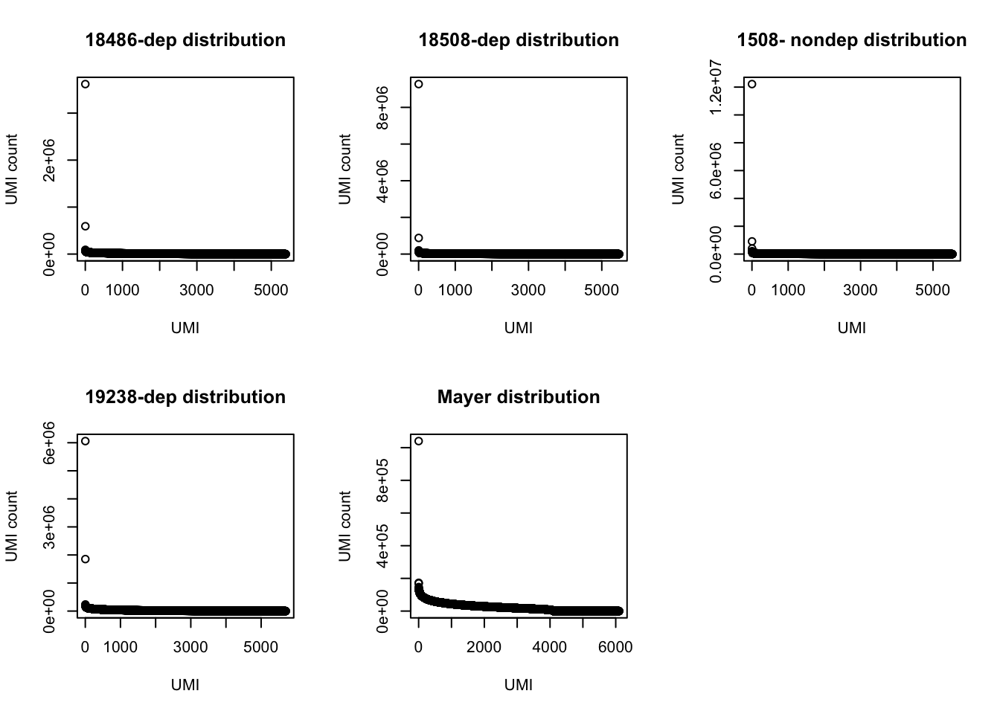

Last updated: 2017-11-13
Code version: a25b69a
In this analysis I will explore the UMI usage in the Net-Seq1 library. Due to low read counts in the total sample, I will exclude this sample from the analysis.
This code is used to create a text file that I can explore in R. It has a list of all of the UMIs used for the sample sorted by usage with the number of times each is used. This is run before the duduplication step.
samtools view {file} | tr "_" "\t" | cut -f 2 | sort | uniq -c > ../../output/UMI_{file}_stat.txtlibrary("tidyr")
library("dplyr")
Attaching package: 'dplyr'The following objects are masked from 'package:stats':
filter, lagThe following objects are masked from 'package:base':
intersect, setdiff, setequal, unionlibrary("ggplot2")
library("seqLogo")Loading required package: gridlibrary("Biostrings")Loading required package: BiocGenericsLoading required package: parallel
Attaching package: 'BiocGenerics'The following objects are masked from 'package:parallel':
clusterApply, clusterApplyLB, clusterCall, clusterEvalQ,
clusterExport, clusterMap, parApply, parCapply, parLapply,
parLapplyLB, parRapply, parSapply, parSapplyLBThe following objects are masked from 'package:dplyr':
combine, intersect, setdiff, unionThe following objects are masked from 'package:stats':
IQR, mad, sd, var, xtabsThe following objects are masked from 'package:base':
anyDuplicated, append, as.data.frame, cbind, colMeans,
colnames, colSums, do.call, duplicated, eval, evalq, Filter,
Find, get, grep, grepl, intersect, is.unsorted, lapply,
lengths, Map, mapply, match, mget, order, paste, pmax,
pmax.int, pmin, pmin.int, Position, rank, rbind, Reduce,
rowMeans, rownames, rowSums, sapply, setdiff, sort, table,
tapply, union, unique, unsplit, which, which.max, which.minLoading required package: S4VectorsLoading required package: stats4
Attaching package: 'S4Vectors'The following objects are masked from 'package:dplyr':
first, renameThe following object is masked from 'package:tidyr':
expandThe following object is masked from 'package:base':
expand.gridLoading required package: IRanges
Attaching package: 'IRanges'The following objects are masked from 'package:dplyr':
collapse, desc, sliceLoading required package: XVector
Attaching package: 'Biostrings'The following object is masked from 'package:base':
strsplitrequire("Biostrings")prepare_UMI_data=function(path.txt){
x=read.delim(file=path.txt, header = FALSE,stringsAsFactors = FALSE)
colnames(x) <- "UMI"
x= data.frame(sapply(x, trimws), stringsAsFactors = FALSE)
x= separate(data=x, col = UMI, into= c("number", "umi"), sep="\\s+")
x$number= as.numeric(x$number)
x= arrange(x, desc(number))
return(x)
}
UMI_18486_dep = prepare_UMI_data("../data/UMI_18486_dep_stat.txt")
UMI_18508_dep= prepare_UMI_data("../data/UMI_18508_dep_stat.txt")
UMI_18508_nondep= prepare_UMI_data("../data/UMI_18508_nondep_stat.txt")
UMI_19238_dep= prepare_UMI_data("../data/UMI_19238_dep_stat.txt")
UMI_mayer= prepare_UMI_data("../data/UMI_mayer_stat.txt")par(mfrow = c(2,3))
plot(UMI_18486_dep$number, ylab="UMI count", xlab="UMI", main="18486-dep distribution")
plot(UMI_18508_dep$number, ylab="UMI count", xlab="UMI", main="18508-dep distribution")
plot(UMI_18508_nondep$number, ylab="UMI count", xlab="UMI", main="1508- nondep distribution")
plot(UMI_19238_dep$number, ylab="UMI count", xlab="UMI", main="19238-dep distribution")
plot(UMI_mayer$number, ylab="UMI count", xlab="UMI", main="Mayer distribution") Look at the top used UMI for each data set.
UMI_18486_dep[1:3,] number umi
1 3617979 ATCTCG
2 592512 CACCCG
3 90128 TCTCGTUMI_18508_dep[1:3,] number umi
1 9270083 ATCTCG
2 880379 CACCCG
3 201796 TCTCGTUMI_18508_nondep[1:3, ] number umi
1 12216803 ATCTCG
2 911426 CACCCG
3 401897 TCTCGTUMI_19238_dep[1:3,] number umi
1 6058977 ATCTCG
2 1852855 CACCCG
3 235866 TATCTCUMI_mayer[1:3,] number umi
1 1040195 ATCTCG
2 172910 TTTCAC
3 169350 TTACACThe top used UMIs are similar accross samples. This preference could be due to annealing temperatures.(Conversation with Po) All data sets show an overrepresentation of a few UMIs, I will remove the top 5 to get a better look at the distribution.
par(mfrow = c(2,3))
plot(UMI_18486_dep[6:5388,]$number, ylab="UMI count", xlab="UMI", main="18486-dep distribution -5")
plot(UMI_18508_dep[6:5471,]$number, ylab="UMI count", xlab="UMI", main="18508-dep distribution -5")
plot(UMI_18508_nondep[6:5535,]$number, ylab="UMI count", xlab="UMI", main="18508-nondep distribution -5")
plot(UMI_19238_dep[6:5699,]$number, ylab="UMI count", xlab="UMI", main="19328-dep distribution -5")
plot(UMI_mayer[6:6101,]$number, ylab="UMI count", xlab="UMI", main="Mayer distribution -5")Use Biostrings to get the PMW then create the logoplots with seqlogo.
#source("https://bioconductor.org/biocLite.R")
#biocLite("seqLogo")
#source("http://bioconductor.org/biocLite.R")
#biocLite("Biostrings")
#set= DNAStringSet(UMI_18486_dep$umi)
#length(set)
#set.freq=data.frame(alphabetFrequency(set, baseOnly=T, as.prob=T))
#set_noN=set[set.freq$other==0,]
#length(set_noN)
#width(set_noN)
#x=consensusMatrix(set_noN) #problem here, getting 1024 for all
#freq_18486= PWM(x[1:4,])
#sum(UMI_18486_dep$number==0) > 0 : shows no UMIs are never used
#seqLogo(freq_18486, ic.scale = TRUE, xaxis = TRUE, yaxis = TRUE, xfontsize = 15, yfontsize =15)Try with a different package:
#library("devtools")
#install_github("omarwagih/ggseqlogo")
require(ggseqlogo)Loading required package: ggseqlogocs1 = make_col_scheme(chars=c('A', 'T', 'C', 'G', 'N'), groups=c('A', 'T', 'C', 'G', 'N'), cols=c('red', 'blue', 'green', 'yellow', 'pink'))
par(mfrow = c(2,3))
ggseqlogo(UMI_18486_dep$umi, col_scheme=cs1)ggseqlogo(UMI_18508_dep$umi, col_scheme=cs1)ggseqlogo(UMI_18508_nondep$umi, col_scheme=cs1)ggseqlogo(UMI_19238_dep$umi, col_scheme=cs1)ggseqlogo(UMI_mayer$umi, col_scheme=cs1)Does not look like we get overrepresentation of one letter at any particular location in the UMI.
test.seqs= c("ATGC", "TAGC", "ATGC", "ATGC")
ggseqlogo(test.seqs, col_scheme=cs1)sessionInfo()R version 3.4.2 (2017-09-28)
Platform: x86_64-apple-darwin15.6.0 (64-bit)
Running under: macOS Sierra 10.12.6
Matrix products: default
BLAS: /Library/Frameworks/R.framework/Versions/3.4/Resources/lib/libRblas.0.dylib
LAPACK: /Library/Frameworks/R.framework/Versions/3.4/Resources/lib/libRlapack.dylib
locale:
[1] en_US.UTF-8/en_US.UTF-8/en_US.UTF-8/C/en_US.UTF-8/en_US.UTF-8
attached base packages:
[1] stats4 parallel grid stats graphics grDevices utils
[8] datasets methods base
other attached packages:
[1] ggseqlogo_0.1 bindrcpp_0.2 Biostrings_2.46.0
[4] XVector_0.18.0 IRanges_2.12.0 S4Vectors_0.16.0
[7] BiocGenerics_0.24.0 seqLogo_1.44.0 ggplot2_2.2.1
[10] dplyr_0.7.4 tidyr_0.7.2
loaded via a namespace (and not attached):
[1] Rcpp_0.12.13 compiler_3.4.2 git2r_0.19.0 plyr_1.8.4
[5] bindr_0.1 tools_3.4.2 zlibbioc_1.24.0 digest_0.6.12
[9] evaluate_0.10.1 tibble_1.3.4 gtable_0.2.0 pkgconfig_2.0.1
[13] rlang_0.1.4 yaml_2.1.14 stringr_1.2.0 knitr_1.17
[17] tidyselect_0.2.3 rprojroot_1.2 glue_1.2.0 R6_2.2.2
[21] rmarkdown_1.6 purrr_0.2.4 magrittr_1.5 backports_1.1.1
[25] scales_0.5.0 htmltools_0.3.6 assertthat_0.2.0 colorspace_1.3-2
[29] labeling_0.3 stringi_1.1.5 lazyeval_0.2.1 munsell_0.4.3 This R Markdown site was created with workflowr